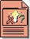

| Artifact: Change Request |
 |
|
| Roles | Responsible: | Modified By: |
|---|---|---|
| Tasks | Input To:
| Output From: |
| Process Usage |
|
|
| Main Description | The necessity for change is inherent in developing a software system as it evolves during its initial creation and as it is subsequently used and maintained in day-to-day operation in an live environment. Change Requests provide a record of decisions and, with an appropriate assessment process, ensures that their change impacts are considered. Change Request are also known by various names such as CR's, defects, bugs, incidents, enhancement requests. Capturing and managing these requests appropriately ensures that changes to a system are made in a controlled way so their effect on the system can be predicted. Some import types of Change Request include: Enhancement Requests are used by various stakeholders to request future features they desire to have included in the product. These are a type of Stakeholder Request that capture and articulate an understanding of the stakeholders needs. Defects are reports of anomalies or failures in a delivered work product. Defects include such things as omissions and imperfections found during early lifecycle phases, or symptoms of faults (failures) that need to be isolated and corrected within the software. Defects may also include deviations from what can be reasonably expected of the software behavior (such as usability issues). The purpose of a defect is to communicate the details of the issue, enabling corrective action, resolution, and tracking to occur. The following people use the CR's:
|
|---|---|
| Brief Outline |
Sample Change Request Form
|
| Concepts |
|---|
© Copyright IBM Corp. 1987, 2006. All Rights Reserved. |